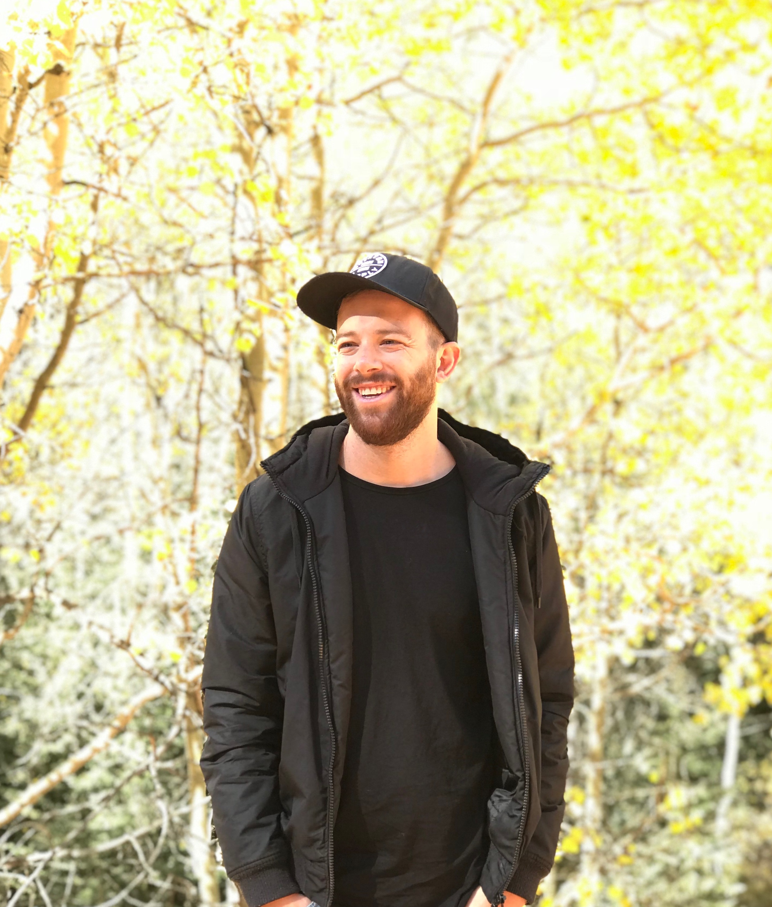

About Me

Jared Henderson is originally from Colorado Springs Colorado. He has a BA in Communications from University of Colorado at Colorado Springs. For the last 12 years he has worked in the music industry in various capacities. From marketing and video production to touring and recording. He has managed marketing campaings for major label releases, produced concert films and documentaires, and been featured on over 30 albums. Recently, Jared has taken a new direction and entered the world of web development.